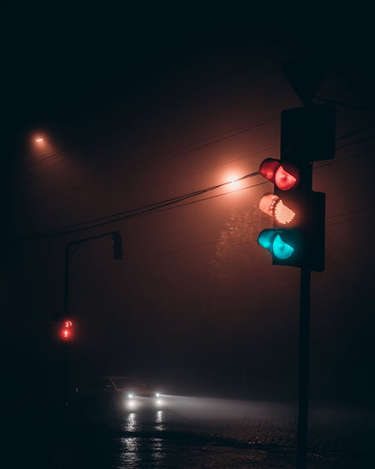
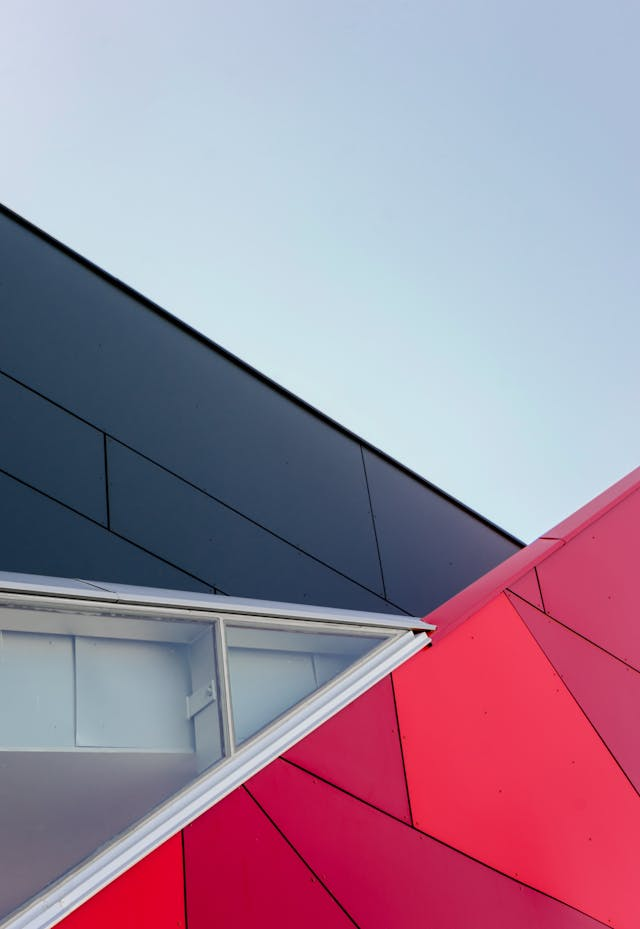
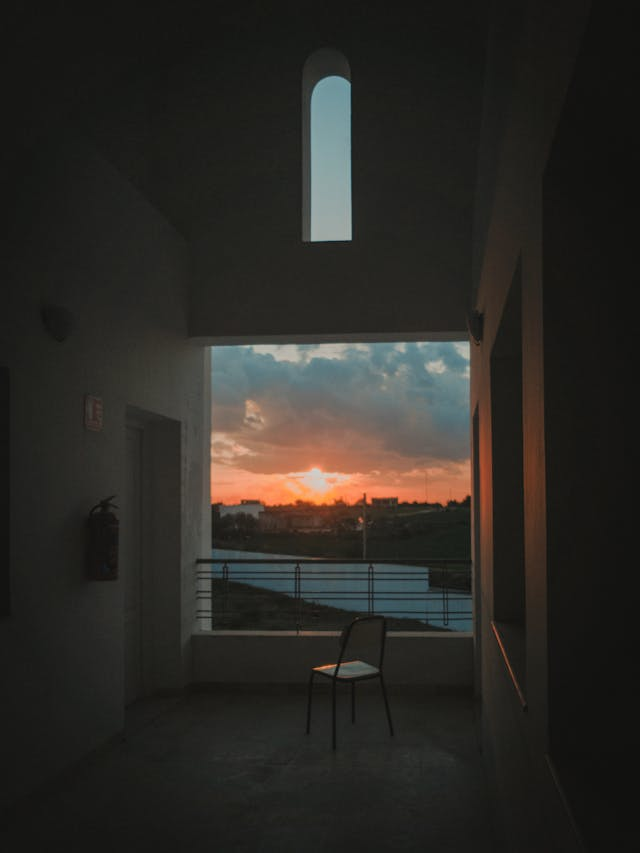

Shaping my portfolio for the next big opportunity

Vision In motion
design trends

Crafted Perspectives
Creative Process

Beyond the Frame
Storytelling
Stories That Shape Perspectives
Echoes of Tomorrow
Whispers of what’s yet to come.
Shadows & Light
Where contrast reveals the truth.
Past the Horizon
Exploring what lies beyond sight.
The Timeless Art of Minimalist Living
Embrace simplicity and spark joy in every corner.
About Me
I am a Self-Learner Student, With 6 months of continuous learning and dedicated hard work I have developed the ability to design clean and responsive website layouts
This blog site is one of my projects, created to showcase my skills in frontend development and my journey toward becoming a professional frontend developer.
- Made with ❤️ Code and
purpose